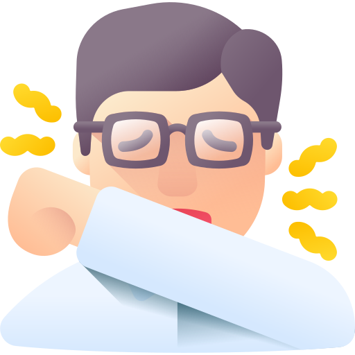
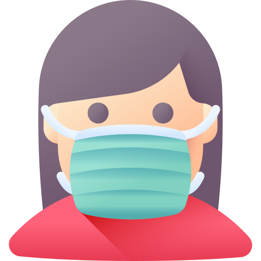

CORONAVÍRUS
Medidas de Prevenção
- Lave com frequência as mãos até a altura dos punhos,
com água e sabão, ou então higienize com álcool em gel 70%.
- Ao tossir ou espirrar, cubra nariz e boca com lenço ou com a parte interna do cotovelo.
- Mantenha distância mínima de 1 (um) metro entre pessoas em lugares públicos e de convívio social.
Evite abraços, beijos e apertos de mãos.
- Higienize com frequência o celular, brinquedos das crianças e outro objetos que são utilizados com frequência.
- Não compartilhe objetos de uso pessoal como talheres, toalhas, pratos e copos.
- Mantenha os ambientes limpos e bem ventilados.
- Evite circulação desnecessária nas ruas, estádios, teatros, shoppings, shows, cinemas e igrejas.
- Se estiver doente, evite contato próximo com outras pessoas, principalmente idosos e doentes crônicos,
busque orientação pelos canais on-line disponibilizados pelo SUS ou atendimento nos serviços de saúde
e siga as recomendações do profissional de saúde.
- Durma bem e tenha uma alimentação saudável.
- Recomenda-se a utilização de máscaras em todos os ambientes.


